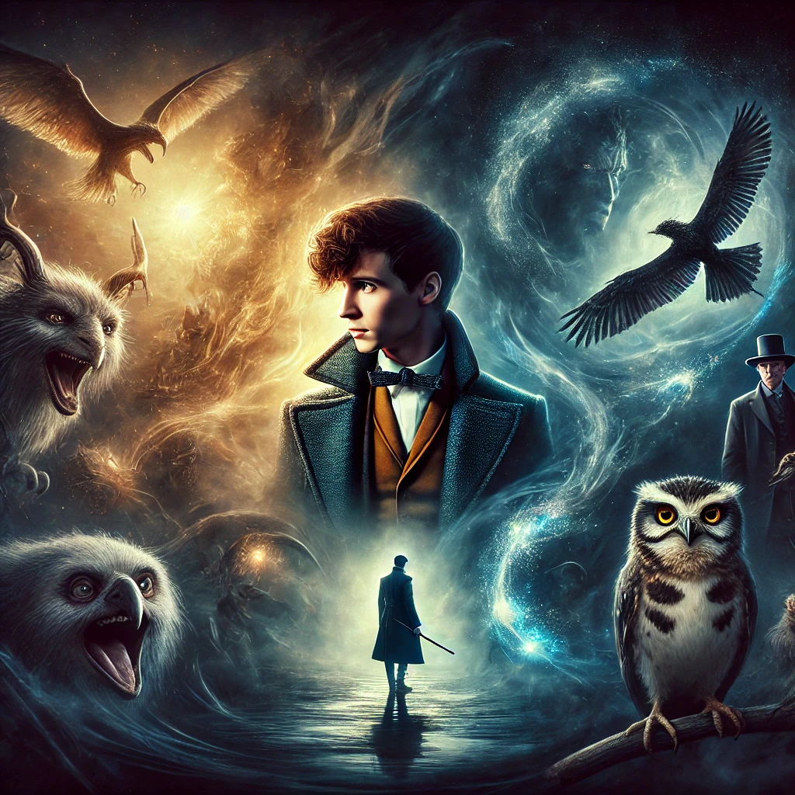

신비한 동물들과 그린델왈드의 범죄
목차
작가
J.k. 롤링
출판일
2019년 7월 24일
감상평에 대한 AI그림
어둠이 짙어질수록 신비한 동물들의 존재는 더욱 빛났다.
뉴트의 따뜻한 시선과 그린델왈드의 차가운 야망이 맞부딪히며, 마법 세계는 거대한 변화를 맞이했다.
선택의 순간들이 쌓여 운명이 되어가는 과정이 숨 막히게 펼쳐지며, 끝까지 마음을 놓을 수 없었다.

감상평에 대한 AI평가
이 감상평은 다음의 감정을 중심으로 구성되어 있습니다.
✨ 신비로움과 대비: 어둠이 짙어질수록 신비한 동물들의 존재가 더욱 빛나며, 마법 세계의 경이로움을 강조합니다.
✨대립과 갈등: 뉴트의 따뜻한 시선과 그린델왈드의 차가운 야망이 충돌하며, 선과 악, 자유와 지배라는 거대한 갈등이 펼쳐집니다.
✨ 운명과 선택: 선택의 순간들이 쌓여 운명이 되어가는 과정이 긴장감 넘치게 전개되며, 마지막까지 눈을 뗄 수 없게 만듭니다.
이 감상평은 마법 세계의 빛과 어둠이 교차하는 순간을 깊이 있게 담아내며, 강렬한 여운을 남기는 글입니다.